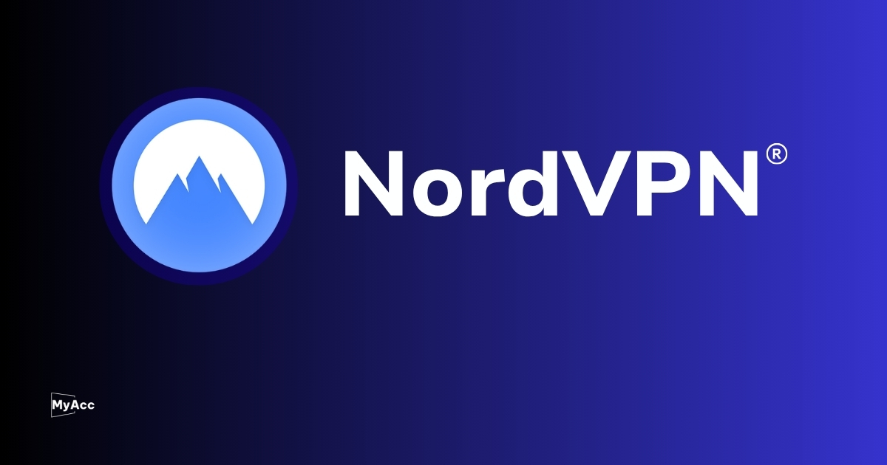
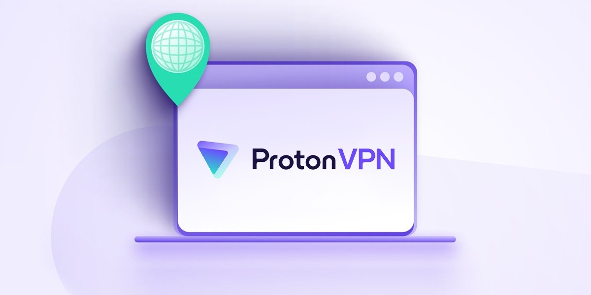
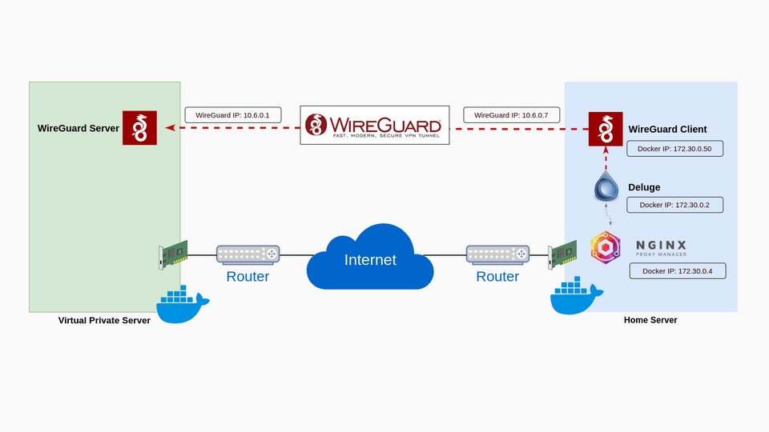

6.1. Ứng dụng của VPN trong thực tế
VPN (Virtual Private Network) được ứng dụng rộng rãi trong nhiều lĩnh vực của đời sống và công việc nhờ khả năng bảo mật dữ liệu, ẩn danh và kết nối từ xa an toàn.
- 6.1.1. Làm việc từ xa trong doanh nghiệp
- VPN giúp doanh nghiệp duy trì hoạt động linh hoạt khi nhân viên làm việc từ xa bằng cách tạo kết nối an toàn tới hệ thống nội bộ qua Internet.
Nhờ đó, dữ liệu trao đổi luôn được mã hóa, hạn chế rủi ro rò rỉ thông tin. Đồng thời, nhân viên vẫn có thể truy cập tài liệu, phần mềm và tài nguyên công ty như khi làm việc trực tiếp.
- 6.1.2. Truy cập tài nguyên bị giới hạn địa lý
- VPN cho phép người dùng “chuyển vùng” địa chỉ IP sang quốc gia khác, nhờ đó có thể truy cập các trang web, nền tảng hoặc dịch vụ bị giới hạn theo khu vực địa lý. Đặc biệt hữu ích khi cần sử dụng nội dung quốc tế,
kiểm tra thị trường hoặc tiếp cận nguồn thông tin bị chặn tại nơi đang sinh sống.
- 6.1.3. Kết nối giữa các chi nhánh doanh nghiệp
- VPN giúp doanh nghiệp kết nối các chi nhánh ở nhiều địa điểm khác nhau thành một hệ thống mạng chung, bảo mật và ổn định.
Nhờ đó, việc chia sẻ dữ liệu, quản lý và vận hành trở nên đồng bộ hơn. Đồng thời, thông tin trao đổi giữa các văn phòng luôn được mã hóa, giảm thiểu rủi ro bị đánh cắp hoặc xâm nhập trái phép.
- 6.1.4. Ứng dụng trong công nghệ và phát triển phần mềm
- Trong lĩnh vực công nghệ và phát triển phần mềm, VPN giúp lập trình viên và kỹ sư truy cập an toàn vào máy chủ nội bộ, môi trường thử nghiệm và hệ thống dữ liệu từ xa.
Nhờ kết nối được mã hóa, họ có thể làm việc linh hoạt ở bất kỳ đâu, đồng thời bảo vệ mã nguồn và thông tin quan trọng khỏi các rủi ro bảo mật.
- 6.1.5. Bảo vệ giao dịch thương mại điện tử và tài chính
- VPN đóng vai trò quan trọng trong việc bảo vệ các giao dịch thương mại điện tử và tài chính bằng cách mã hóa toàn bộ dữ liệu truyền qua Internet.
Nhờ đó, những thông tin nhạy cảm như tài khoản, mật khẩu hay chi tiết thanh toán luôn được bảo mật, giảm thiểu nguy cơ bị đánh cắp hoặc tấn công mạng.
6.2. Các phần mềm VPN nổi bật
Hiện nay có nhiều phần mềm VPN được sử dụng phổ biến trên thế giới và cả tại Việt Nam, phục vụ nhu cầu bảo mật và kết nối an toàn.
- 6.2.1. Các phần mềm VPN quốc tế
- 6.2.1.a. NordVPN
- NordVPN là dịch vụ VPN quốc tế giúp bảo vệ quyền riêng tư bằng cách mã hóa dữ liệu theo chuẩn AES-256 và ẩn địa chỉ IP thông qua hệ thống máy chủ toàn cầu. Nền tảng này hỗ trợ đa thiết bị,
sở hữu hơn 5500 máy chủ tại nhiều quốc gia, đồng thời tích hợp các tính năng như Double VPN, chặn quảng cáo, Kill Switch và chính sách không lưu nhật ký, đảm bảo an toàn tối đa khi truy cập Internet.

Hình ảnh minh họa NordVPN
- 6.2.1.b. ExpressVPN
- ExpressVPN là dịch vụ VPN cao cấp nổi bật với tốc độ nhanh và khả năng bảo mật mạnh mẽ. Nền tảng sử dụng mã hóa AES-256, chính sách không lưu log và tính năng Network Lock giúp ngăn rò rỉ dữ liệu khi mất kết nối.
Ngoài ra, ExpressVPN hỗ trợ chia đường hầm, nhiều giao thức linh hoạt và sở hữu mạng lưới máy chủ rộng khắp hơn 90 quốc gia, mang lại trải nghiệm truy cập an toàn, ổn định.
- 6.2.1.c. ProtonVPN
- ProtonVPN là dịch vụ VPN chú trọng quyền riêng tư, phát triển bởi Proton Technologies AG (Thụy Sĩ). Nền tảng sử dụng mã hóa AES-256, giao thức OpenVPN/IKEv2 và công nghệ Secure Core định tuyến qua nhiều máy chủ an toàn.
ProtonVPN có chính sách không lưu log, hỗ trợ Kill Switch, Always-on VPN, chặn quảng cáo NetShield và P2P, đồng thời cung cấp cả phiên bản miễn phí lẫn trả phí linh hoạt cho người dùng.

Hình ảnh minh họa ProtonVPN
- 6.2.1.d. OpenVPN
- OpenVPN là phần mềm và giao thức VPN mã nguồn mở, cho phép tạo kết nối an toàn giữa các thiết bị qua Internet bằng cơ chế “đường hầm” mã hóa.
Phần mềm sử dụng các chuẩn bảo mật như AES, TLS và HMAC để bảo vệ dữ liệu, hỗ trợ xác thực bằng chứng chỉ hoặc mật khẩu. OpenVPN hoạt động linh hoạt với cả UDP và TCP, phù hợp triển khai từ cá nhân đến hệ thống doanh nghiệp.
- 6.2.1.e. WireGuard
- WireGuard là giao thức VPN mã nguồn mở hiện đại, nổi bật với thiết kế tối giản nhưng hiệu suất cao. Ra mắt năm 2016 bởi Jason A. Donenfeld, nền tảng này sử dụng các thuật toán mã hóa tiên tiến nhằm đảm bảo bảo mật dữ liệu.
WireGuard hỗ trợ đa nền tảng, cấu hình đơn giản, tốc độ nhanh hơn nhiều so với VPN truyền thống, phù hợp cho cả cá nhân lẫn doanh nghiệp.

Hình ảnh minh họa WireGuard
|